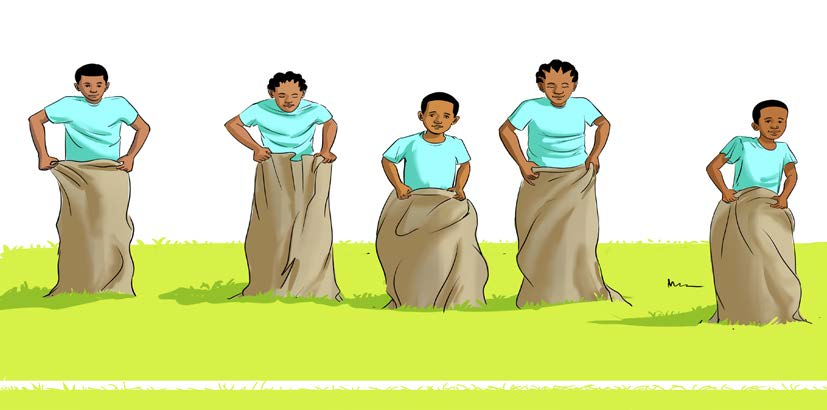

Namna ya kucheza:
1.
Fanya mazoezi ya kuandaa mwili kwa kukimbia polepole kwa dakika 2 hadi 3;
2.
Weka alama ya kuanzia na kumalizia kwenye eneo la kuchezea. Umbali unaweza kuwa kati ya mita 25, 50, 75 au 100 kutegemea na uwezo wa wachezaji;
3.
Vua viatu, na chukua gunia lako la kukimbilia;
4.
Simama kwenye mstari wa kuanzia mbio;
5.
Ingiza miguu kwenye gunia na hakikisha linavuka kiuno;
6.
Shikilia gunia kwa mikono lisidondoke;
7.
Subiri amri ya mwongozaji;
8.
Baada ya amri ya mwongozaji anza kukimbia kwa kuruka kwa miguu miwili kwa pamoja kwenda mbele;
9.
Kimbia kwa kasi kuelekea mstari wa kumalizia, kama inavyoonekana katika Kielelezo namba 1; na
10.
Mshindi ni yule atakayekuwa wa kwanza kuvuka mstari wa kumalizia.
